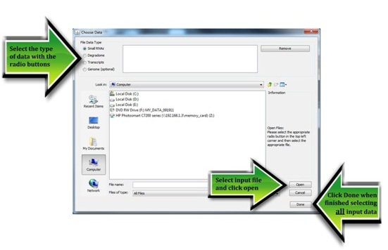

Open input files
The inputs for PAREsnip are:- the mRNA dataset (transcriptome),
- the transcript degradation fragments obtained from a PARE experiment (degradome),
- the small RNA dataset (sRNAome), and
- the genome sequence
The first three files are required but the genome is optional. When included, the genome is used to filter out sRNAs that do not map to the genome. All of the inputs must be in FASTA format and must only contain the characters 'A', 'C', 'G', 'T' and 'U'. Sequences containing unknown characters and ambiguity codes are discarded as they cannot be accurately aligned. FASTQ to FASTA and adaptor removal tools are provided within the Workbench.
Clicking 'Open' will show the 'Choose Data' dialog where you may browse your computer and select your input files. It is important to tell PAREsnip which files contain the transcripts, the degradome, the small RNAs and the genome. This is done by making sure the correct radio-button at the top-left is selected.

Once the input files are set PAREsnip is ready to begin an analysis. However, the parameters may need adjustment. Details are given in the Run section.